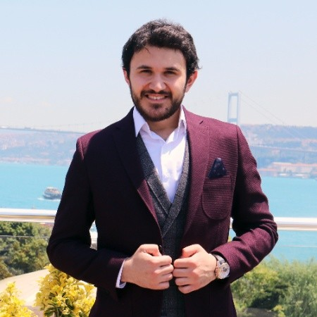

Hello
I graduated from both computer engineering and computer education and instructional technologies departments. I am a Web Developer. I love React and tea.
My Skills

Design & Development
I started learning to code when I was 15 years old because I wanted to be a computer engineer. Over time, I have gained a wealth of experience designing and development web applications.

Crispy Toast Challenge
but my best skill is actually in making crispy tost. I make the absolute best toast in the family. Mixed toast with lots of cheddar is my favourite.